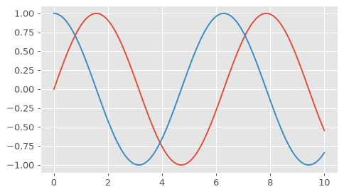
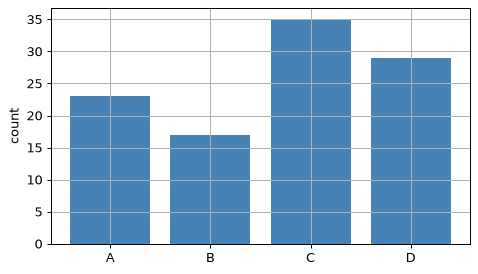
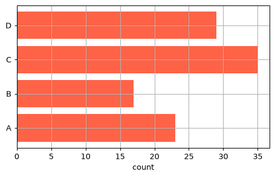
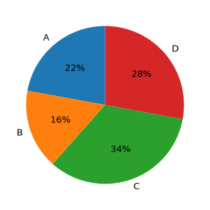
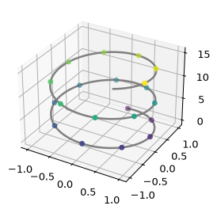
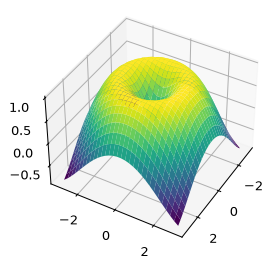

📖 対応する教科書：VanderPlas, Python Data Science Handbook（オンライン版）
- Handbook 4.11 Customization: Configurations and Stylesheets
- Handbook 4.12 Three-Dimensional Plotting in Matplotlib
①
見た目を一括で変える：スタイルシート
plt.style.use
色やフォントなど見た目の設定をまとめて変えるのがスタイルシートです。
print(plt.style.available[:6])
['Solarize_Light2', 'bmh', 'classic', 'dark_background', 'fast', 'fivethirtyeight']
x = np.linspace(0, 10, 100) with plt.style.context('ggplot'): plt.plot(x, np.sin(x)) plt.plot(x, np.cos(x))

plt.style.use('名前')はそれ以降すべてに、with plt.style.context('名前'):はそのブロックの中だけに適用されます。
個別の設定はplt.rcParamsで変えられます。
plt.rcParams['lines.linewidth'] = 2 plt.rcParams['axes.grid'] = True plt.rcParams['lines.linewidth']
2.0
🍎 かんたん説明
「全体の見た目」はスタイルシート、「1か所だけ」は引数、というふうに使い分けます。
💻 ミニ練習：スタイル
with文で'seaborn-v0_8'スタイルを一時的に使って、線を1本描くコードを書いてください。
with plt.style.context('seaborn-v0_8'): plt.plot([1, 2, 3])
withを抜けると元の設定に戻ります。
②
棒グラフ・円グラフ
bar と pie
カテゴリごとの大きさを比べるには棒グラフ（plt.bar）、割合を見るには円グラフ（plt.pie）です。
cats = ['A', 'B', 'C', 'D'] vals = [23, 17, 35, 29] fig, ax = plt.subplots() ax.bar(cats, vals, color='steelblue') ax.set_ylabel('count')

fig, ax = plt.subplots() ax.barh(cats, vals, color='tomato') # 横向き ax.set_xlabel('count')

fig, ax = plt.subplots(figsize=(4, 4)) ax.pie(vals, labels=cats, autopct='%1.0f%%', startangle=90)

⚠️ 円グラフは、項目が多い・値が近いときには比べにくくなります。迷ったら棒グラフです。
🍎 かんたん説明
大きさの比較は棒、全体の中の割合は円。
💻 ミニ練習：棒グラフ
catsとvalsの棒グラフを描き、y軸ラベルを count にしてください。
ax.bar(cats, vals) ax.set_ylabel('count')
barにカテゴリと値を渡します。
③
3Dのグラフ
projection='3d'
3次元の図は、projection='3d'を指定して軸を作ります。
fig = plt.figure() ax = fig.add_subplot(projection='3d') z = np.linspace(0, 15, 200) ax.plot3D(np.sin(z), np.cos(z), z, 'gray') ax.scatter3D(np.sin(z[::10]), np.cos(z[::10]), z[::10], c=z[::10], cmap='viridis')

X, Y = np.meshgrid(np.linspace(-3, 3, 30), np.linspace(-3, 3, 30)) Z = np.sin(np.sqrt(X ** 2 + Y ** 2)) fig = plt.figure() ax = fig.add_subplot(projection='3d') ax.plot_surface(X, Y, Z, cmap='viridis') ax.view_init(elev=40, azim=30)

🍎 かんたん説明
3Dは、見る角度（view_init）で印象が変わります。読み取りやすさのため、使いすぎないのも大事です。
💻 ミニ練習：3D
3D用の軸を作ってください（axに入れる）。
ax = fig.add_subplot(projection='3d')
projectionを指定します。
📝 確認クイズ
0 / 6
✏️ Questions are in English — answers are checked instantly.
Question 1
How do you apply a style only inside a code block?
Question 2
Where do you change an individual default such as line width?
Question 3
Which function draws a vertical bar chart?
Question 4
Which chart is best for comparing sizes of many similar categories?
Question 5
How do you create 3-D axes?
Question 6
Which function changes the viewing angle of a 3-D plot?